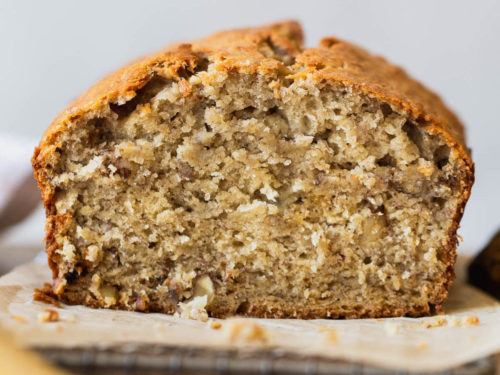

Banana Bread

Description
Banana bread is a type of bread made from mashed bananas.
It is often a moist, sweet; however there are some banana bread recipes that are yeast raised breads.
Ingredients
- 3 ripe bananas
- 1/2 cup of unsalted butter
- 3/4 cup granulated sugar
- 2 large eggs
- 1 1/2 cups of all-purpose flour
- 1 tsp baking soda
- 1/2 tsp salt
- 1/2 tsp vanilla extract
- 1 cup walnuts
For more information click here